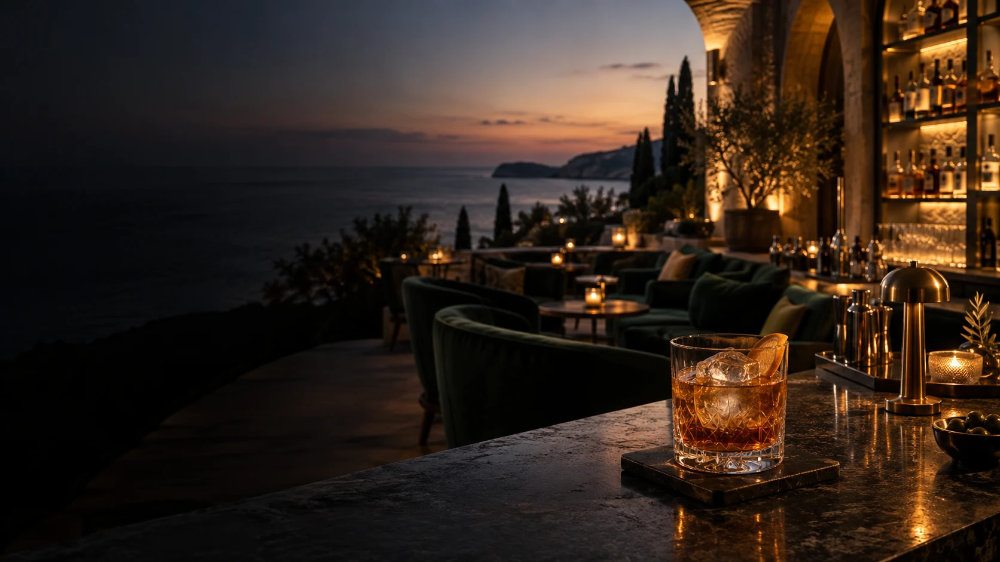

Weddings & Celebrations
Bodas, bautizos, cumpleaños y fiestas privadas. Del primer brindis a la pista de baile, un servicio al ritmo de la celebración.

Cócteles con personalidad, un gin-tonic bien servido y un equipo que cuida de sus invitados. Llevamos la experiencia Cheers al espacio que elija.
Bodas · Eventos de empresa · Celebraciones
Un lugar donde los invitados se encuentran, brindan, descubren sabores, conversan y hacen fotografías. Cuidamos el servicio para que disfruten de la celebración y se lleven buenos recuerdos.
Bodas, bautizos, cumpleaños y fiestas privadas. Del primer brindis a la pista de baile, un servicio al ritmo de la celebración.
Eventos empresariales, lanzamientos, congresos, fiestas de empresa, encuentros de equipo y activaciones de marca. Hospitalidad con propósito.
Festivales, ferias y eventos públicos o privados. Explotación temporal del bar, con equipo, carta y operación acordados con la organización.
¿Se casa y busca algo más que los cócteles de siempre? Diseñamos una propuesta con la personalidad de la ocasión: recetas personalizadas, una carta seleccionada y un servicio cuidado, del primer brindis al último cóctel.
¿Ya tiene finca, hotel, catering o espacio elegido? Trabajamos con sus responsables para estudiar las posibilidades, integrar el servicio de bar y coordinar la logística. El punto de partida es su evento.
Adaptamos la carta, el equipo y el servicio al tamaño de la celebración. Bodas y bautizos, fiestas privadas, eventos de empresa y servicio de bar en colaboración con empresas de catering.
Adaptamos equipo, cantidades, carta, estructura del servicio, logística y formato comercial al tamaño del evento y a las condiciones del espacio.
Un Cóctel de la Novia, un Cóctel del Novio o una receta exclusiva de la boda. Creamos un concepto que cuente parte de su historia, con sabores y presentación a la altura de la ocasión.
Nombre, ingredientes, colores, decoración, presentación y menú pueden adaptarse. Definimos las posibilidades y los elementos incluidos en la propuesta.
Cócteles de autor inspirados en la marca, el producto o la campaña. Adaptamos sabores, colores y cartas al concepto del evento, coordinando el servicio con el equipo de marketing y el espacio.
Planificar un evento de empresaEl concepto y los elementos de personalización se acuerdan en la propuesta. La producción gráfica o el branding físico no están incluidos de forma implícita.
Clásicos · Cócteles de autor · Low alcohol · No alcohol
Cócteles personalizados o una carta definida de antemano, bebidas de calidad y bartenders especializados. Planificamos las bebidas, el hielo, los vasos y la organización del servicio, detallando en la propuesta todo lo que se incluye.
Ginebras premium, tónicas seleccionadas y botánicos que realzan cada combinación. Servicio con hielo en cubos y vasos de vidrio o policarbonato, según el espacio y el formato acordado.
Podemos incluir cócteles sin alcohol y adaptar la selección a los gustos de sus invitados. Presentación cuidada, sugerencias fáciles de elegir y la misma atención en cada copa.
Servicio profesional de coctelería con una carta seleccionada y adaptada al evento.
Cócteles personalizados, selección premium y una experiencia con identidad propia.
Un concepto de bar más completo: equipo, carta y operación planificados para la ocasión.
Experiencias orientativas, sin precios fijos ni inclusiones automáticas. Todos los servicios se personalizan y están sujetos a propuesta. El formato de pago se elige por separado.
El organizador cubre el servicio con una carta, duración y condiciones acordadas. Los invitados disfrutan de las bebidas incluidas sin pagar cada consumición.
Los invitados pagan sus bebidas. La viabilidad, los precios y los costes de operación se negocian con la organización y el espacio.
Los organizadores pueden ofrecer una selección de bebidas, un periodo de barra libre o un importe por invitado. Los demás consumos corren a cargo de los invitados, con condiciones claras desde el principio.
Cada propuesta considera el lugar, el número de invitados, la duración y la carta. Acordamos de antemano los costes, lo que se incluye y las responsabilidades de cada parte.
También asumimos la explotación temporal de espacios de bar en eventos. Coordinamos con la organización la operación, el equipo, la oferta y las condiciones comerciales según el espacio y la dimensión del evento.
Desplazamiento y disponibilidad confirmados en la propuesta, según el lugar y la dimensión del evento.
Indíquenos la fecha, el lugar y el número de invitados. Prepararemos una propuesta de bar adaptada a la ocasión y a su presupuesto.